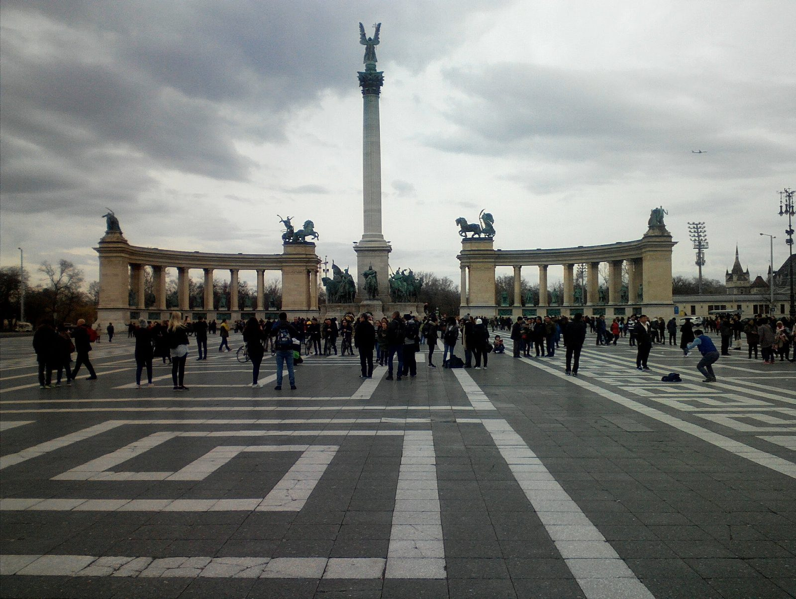
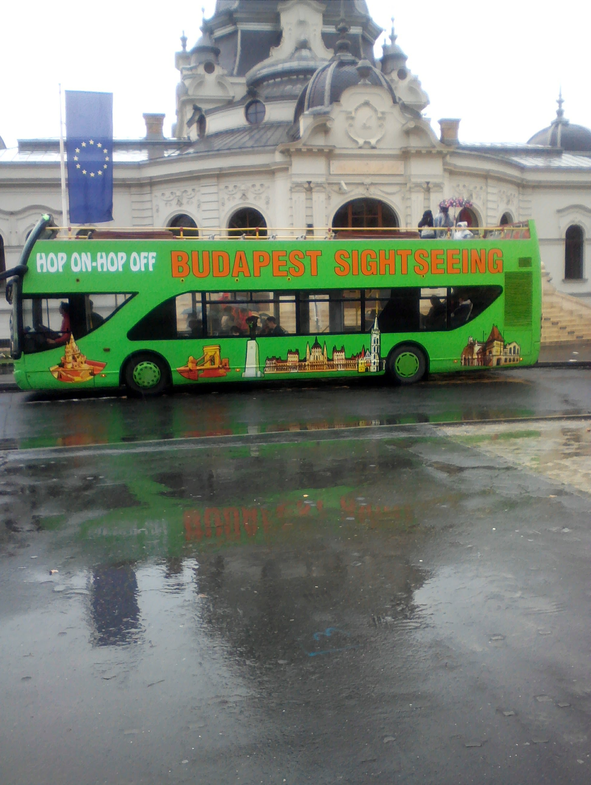
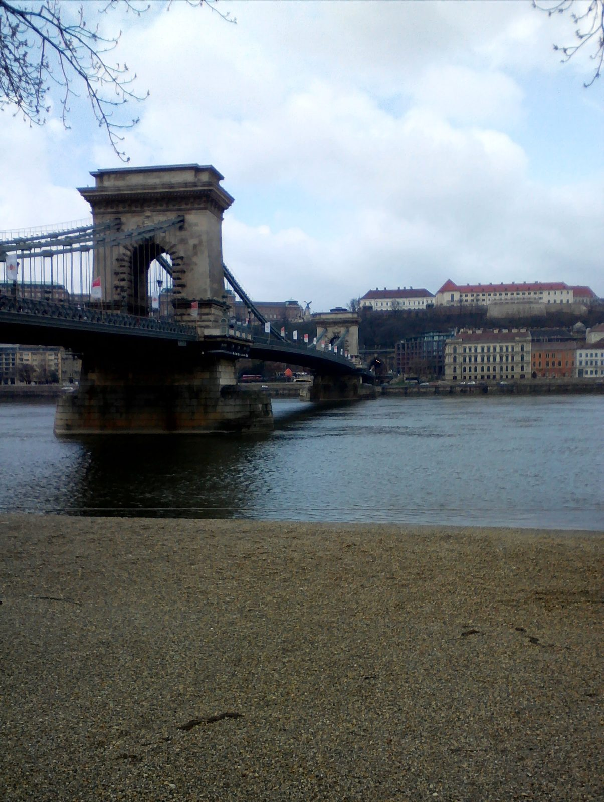
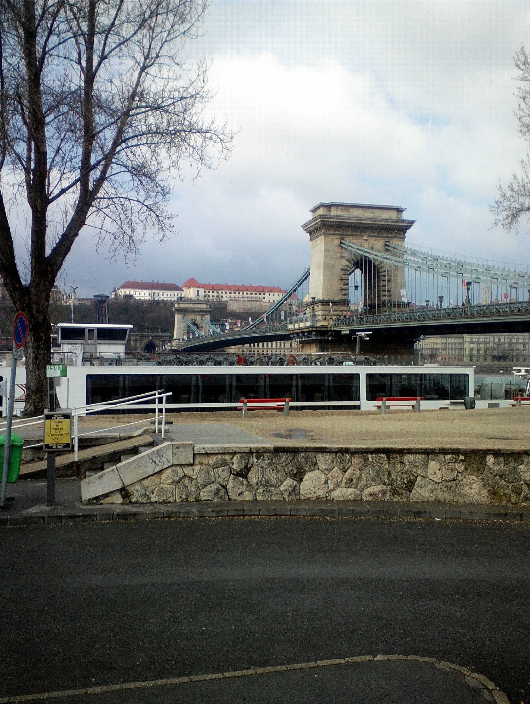
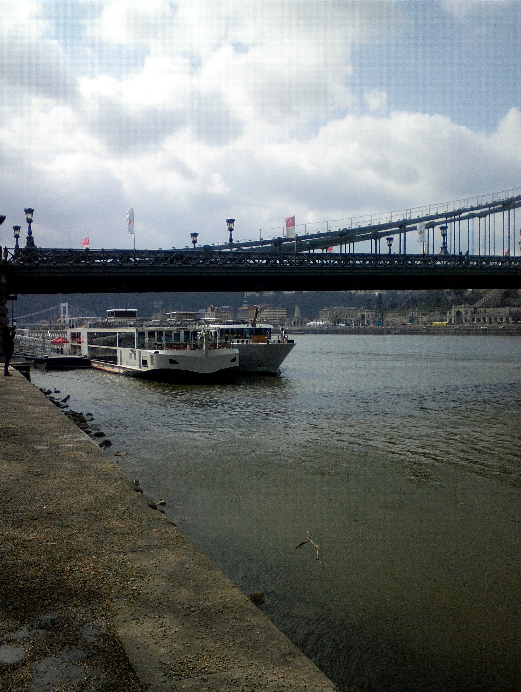
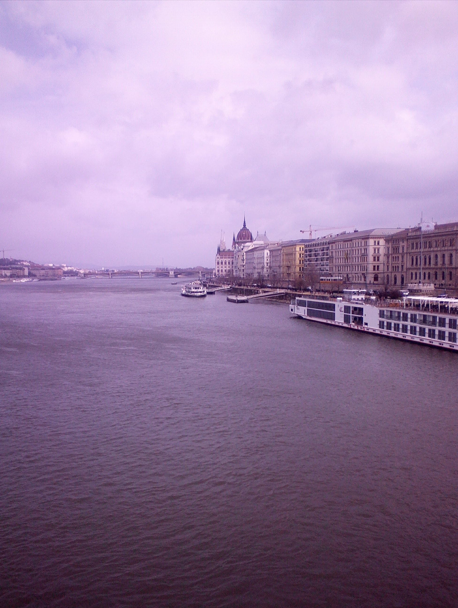

Budapešť
Cesty do Maďarska s klientelou — 2018. Hlavní město na obou březích Dunaje, parlament, hradní vrch, lázně.
6 fotografií z mého archivuFotografie ↓Poznámky k cestě ↓
🏛 Z cesty 2018-03
Březnové fotky. (2 fotek · březen 2018)


Kliknutím na fotografii ji otevřeš v plné velikosti.
🏛 Z cesty 2018-04
Dubnové fotky. (4 fotek · duben 2018)




Kliknutím na fotografii ji otevřeš v plné velikosti.
Poznámky k cestě
Budapešť je jedno z nejhezčích hlavních měst Evropy — Dunaj rozdělující město na Buda a Pest, parlament jako z pohlednice, lázně Széchenyi a Gellért. Z autobusu cestou na východ stojí za to se vždycky alespoň zastavit.
Tip na večerní plavbu Budapeští
Reklama · Za rezervaci mohu získat provizi. Nabídku zobrazuje GetYourGuide.
Powered by GetYourGuide